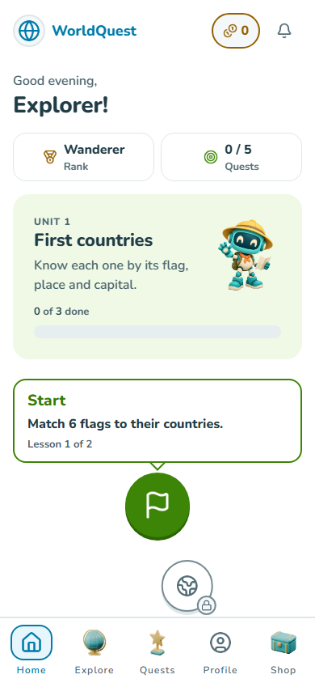
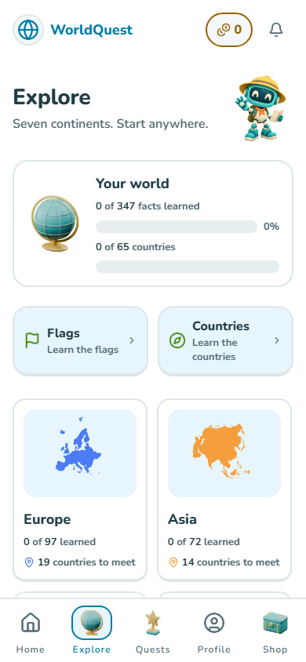
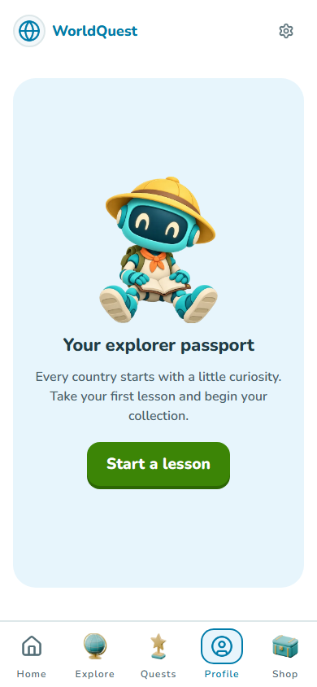
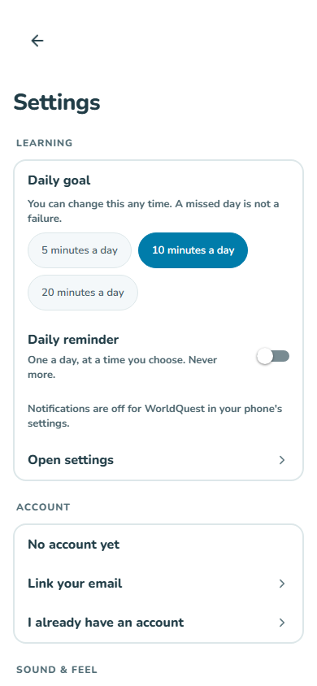
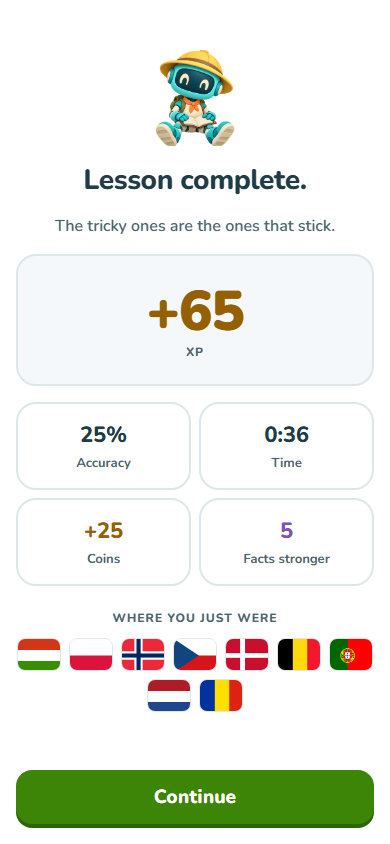
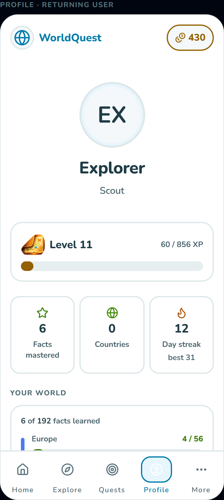
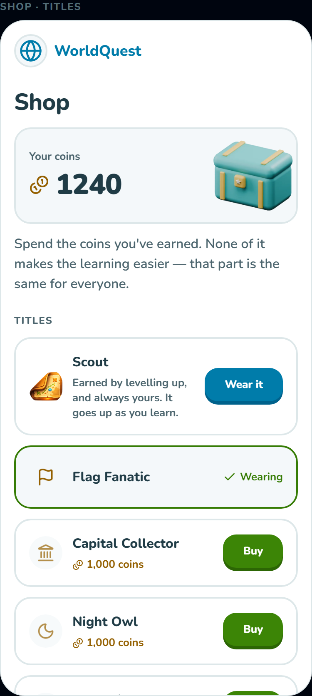
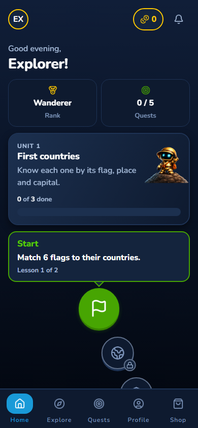
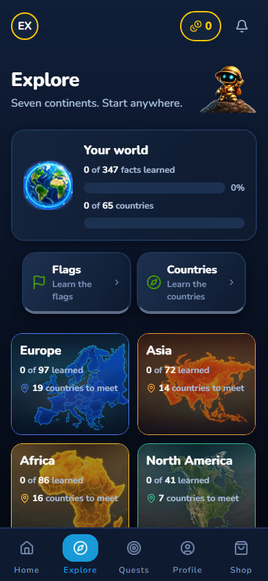
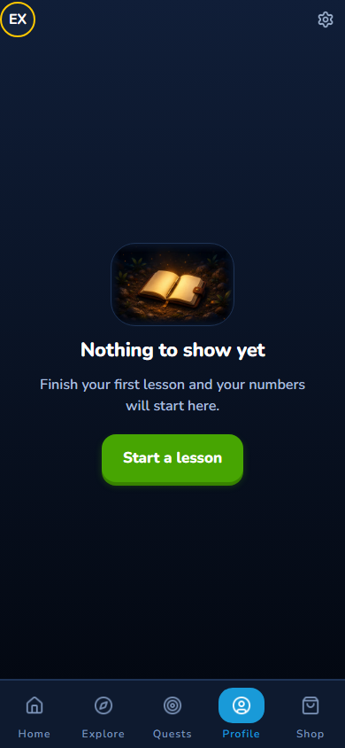

WorldQuest, in daylight
A geography learning app with a playful lesson path, tactile controls, original Atlas artwork and reusable 3D assets. Screens below come from the real web app unless marked as component fixtures. Native device behavior still needs review.
Implementation notes · Asset provenance

Home
Explore
Profile
Settings
Lesson summary
Populated profile (component fixture)
Shop (component fixture)Model animation previews
Before

Previous home
Previous explore
Previous profile